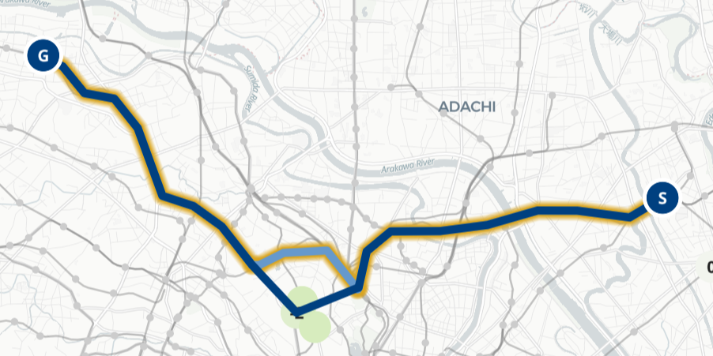

公共交通オープンデータチャレンジ2024表彰式にて、坂村会長と。（残念ながら1名欠席）
都市計画を専門とする4名で構成。都市を楽しむ視点を何とかデータを使って提供できないかと考えた末、従来の乗換案内ではヒットしないシェアサイクルを鉄道利用と組み合わせたルートを提示する「急がば漕げマップ」を開発。
鉄道を利用するより自転車を漕ぐほうが良いルートを表示するウェブアプリ。
それぞれの利用者からみた視点を念頭に、
自治体担当者やモビリティ事業者を念頭に、自転車と鉄道を組み合わせた利用が行われるシナリオにおいて、
鉄道網はかなり発達してきているが、乗換検索には出てこないアウトローな乗り換えによってもっと便利になるのでは？
シェアサイクルの充実もあり、そこに組み合わせのポテンシャルがあるのでは？
乗換駅まで大きく迂回しなければならないところを、自転車によってショートカットするパターン。放射状に伸びている首都圏の鉄道網の性質上、郊外部でありそう。

目的地の路線に直接乗り換えることができないため、複数回の乗り換えを強いられる場合。自転車で繋げば乗り換え回数が削減できそう。
公開されている鉄道事業者の時刻表データをもとに、ネットワークを構築。
その後、「大都市交通センサス」のデータをもとに最短経路検索を行い、サイクルポテンシャル（交通量）を推定。
平均所要時間を用いることについて
所要時間の誤差の大きい自転車による移動を主眼においているため、リアルタイムの検索によるメリットが少ない。
列車単位だとネットワークのデータが膨れ上がり技術的難易度が上がるが、駅数のオーダーならなんとかなりそう。
結果として、ゴリゴリ最適化しなくても比較的サクサク動くアプリ構築に成功。（最短経路検索はナイーブなダイクストラ法を使用！）
仕組みの詳細についてはウェブアプリ上で解説しています。
| データ | 使用目的 | 出典 |
|---|---|---|
| 鉄道運行関連データ | グラフの構築・計算 | 公共交通オープンデータセンター |
| 鉄道路線データ | 地図上での表示・未提供データ補完 | 国土数値情報 鉄道時系列データ |
| シェアサイクル関連GBFSデータ | 施設整備状況・リアルタイム状況把握 | 公共交通オープンデータセンター |
| 駅間流動データ | サイクルポテンシャルの計算 | 大都市交通センサス（令和3年度調査） |
これらのデータをもとにして、首都圏の鉄道網を表現する多層ネットワークを構築。
自転車と鉄道の組み合わせのため、取りうる経路は多く存在。どのような経路を「最適」とするかは人によって・状況によって異なる。
これらの情報をもとにある程度経路検索結果に影響を与えられるよう、多くの設定項目を用意。
「急げば漕げマップ」を楽しんでほしい + まちづくり的な面白さを発信したい
ということで、OSSの精神にのっとり、なるべく「手の内を明かす」ことを意識。
ウェブアプリ上において、しくみの解説や見えてきたことのヒントを掲載。楽しむための工夫を用意。
制作者ブログにて、アプリには書ききれなかったこぼれ話や自分たちが使ううちに気付いた点を共有しています。
都市計画学会が発行する「都市計画報告集」に研究報告を投稿。11月の全国大会でも口頭発表を予定しています。
公共交通オープンデータチャレンジで公開されているデータから、複数の鉄道事業者、また様々な交通モードのデータが利用可能。
データの組み合わせによって、都市や交通に関する新しい発見が産まれそう。
（非プログラマのチームとして最優秀賞を受賞して）技術の高度さだけでなく、着眼点の面白さで勝負できるのも魅力。ぜひまちづくりに関心がある人にも積極的に遊んでほしい